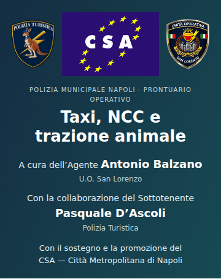
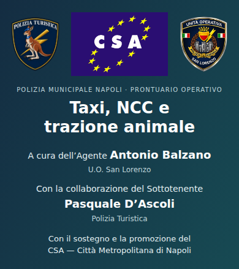
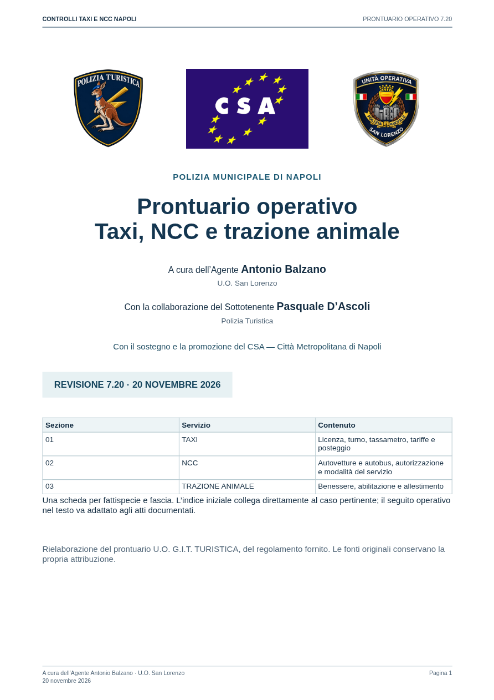

PWA 1.8.18 / PDF 7.20
Sostituzione del solo logo CSA con il nuovo originale, intero e proporzionato, al centro tra Polizia Turistica e U.O. San Lorenzo. Crediti, dicitura di sostegno e tutti i contenuti delle schede invariati.
Con il sostegno e la promozione del CSA — Città Metropolitana di Napoli
Intestazione · 360 px
Intestazione · 390 px
Copertina PDF 7.20